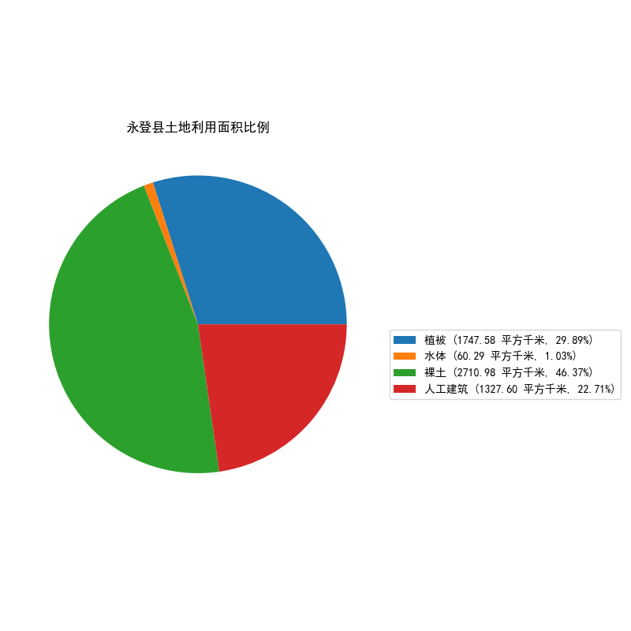
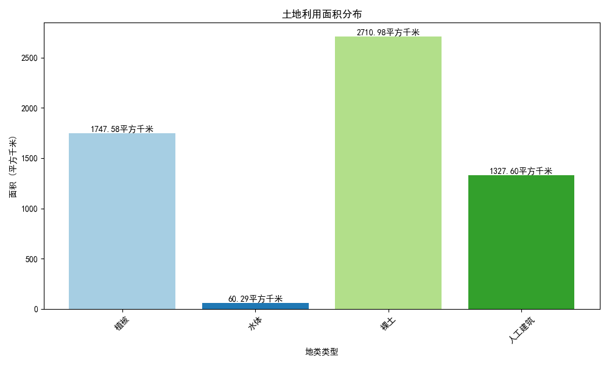

显示全部土地类型
显示所有风险区
下载土地利用分类图
下载风险区分析图
土地类型：
请选择
植被
水体
裸土
人工建筑
查询土地类型
风险度：
请选择
极低风险区
低风险区
中风险区
高风险区
查询风险度
综合查询：
土地类型
植被
水体
裸土
人工建筑
风险度
极低风险区
低风险区
中风险区
高风险区
查询
清除图层
底图：
标准
卫星
无
土地利用类型图

土地利用图1

土地利用图2
调试日志：
图例
植被
水体
裸土
人工建筑
极低风险区
低风险区
中风险区
高风险区